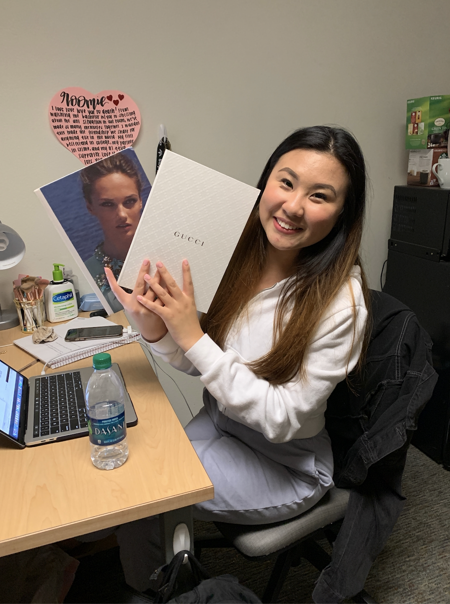
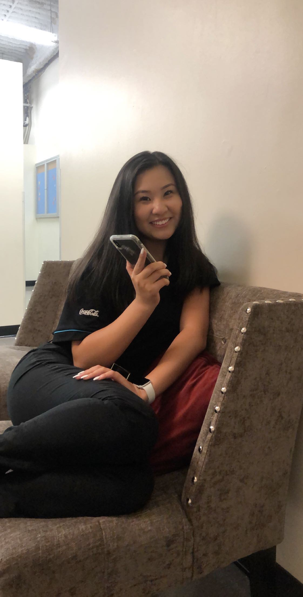
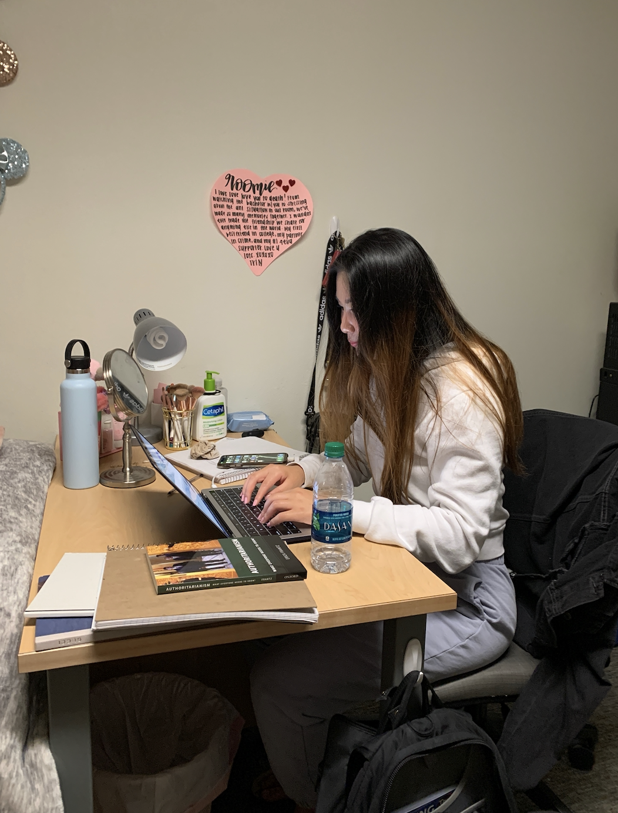
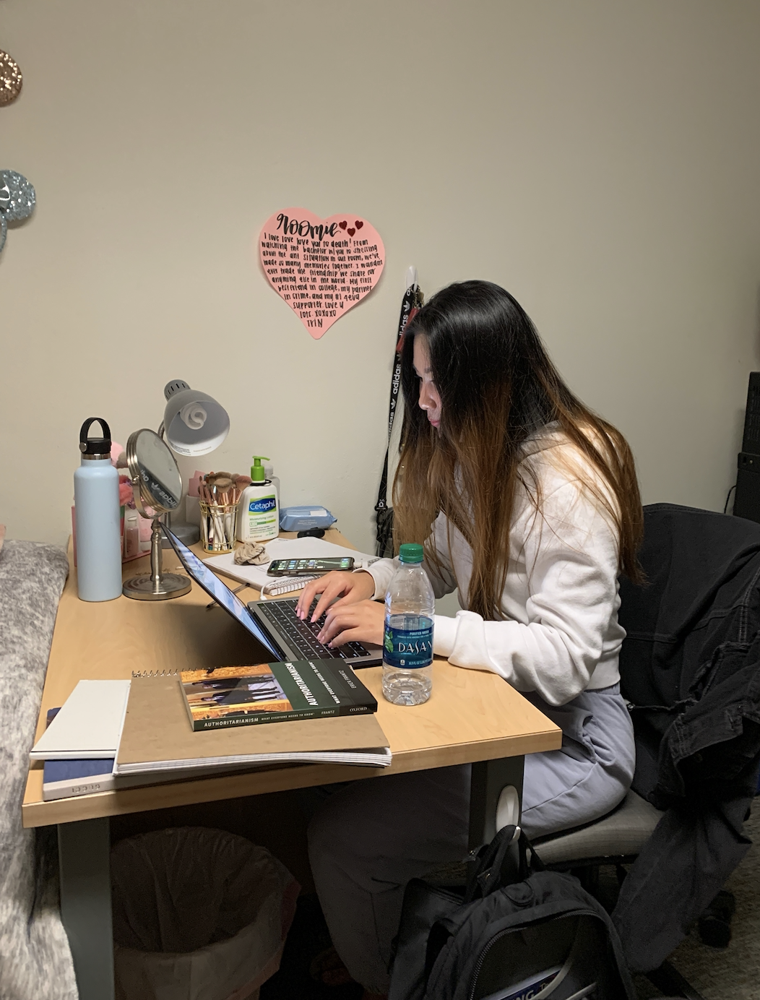

Alice Liu
Alice Liu, a freshman at the University of California, Riverside, strives to gain work experience in the political science field and expand her knowledge on the politics of not only the underdeveloped world, but also compare each and every state. She is a Political Science major with an emphasis in Administrative Studies. She has taken courses in Politics of the Underdeveloped, and classes in courses such as International Politics and the history of both the US and the Western world. She is extremely interested in learning about the political environment of each foreign country and their very own individual policies. She is very hardworking, dedicated, and motivated to stay on top of her work, finish each task presented accordingly, and grow not only as a person, but in her respective field as well. She aspires to work in many different countries outside of the US, ranging from China to Egypt. She is very interested in seeing how each country runs itself and the many different policies that each country uses to stabilize not only their economy, but the political atmosphere in which the people live in. Next quarter, she plans to take courses in political ideology and political theory. First, she intends to gather extensive knowledge on the politics of the United States, and then she intends to work with other countries to compare the political atmosphere, and what makes a country successful. Not only does she strive to gain experience in the political field, she intends to make a mark in the business world as well. She has taken introductory business classes, and plans on enrolling in more business courses next quarter. She is interested in marketing, data analytics, and operational management. She strives to gain experience in the business field as well, having interned with the fashion company Nordstrom and worked behind the scenes when it comes to merchandising, marketing, and organizational management. Work experience at Nordstrom greatly interested her and it taught her the basics when it comes to running a successful retail company. Alice also has a great interest in how technology will affect business as it continues to grow. With the advancement of technology, she is interested in learning both the positive and negative effects, and hopes to utilize it to the benefit of a great business and political atmosphere. Alice strives to learn the most she can about technology and the effects on the political world as well. She would love to expand her knowledge on AI and the positive and negative relationships it has on how the world develops politically. She hopes to gain more experience in all three fields: Political Science, Business Administration, and Technology.
Experience
Fashion Intern, Sales Associate
• Worked behind the scenes and shadowed marketing and merchandise experts
• Greeted and attended to guests and helped pick out new styels
• Collaborated with brands and team members to put up displays
Cashier Associate
• Helped customers with concerns and fulfilled requests
• Restocked, arranged, and organized merchandise
• Assisted customers with purhcases, returns, and item locations
Sales Representative
• Utilized various sales techniques to develop relationships with customers and drive sales
• Exceeded established sales and company goals
Education
UC Riverside
Portfolio




